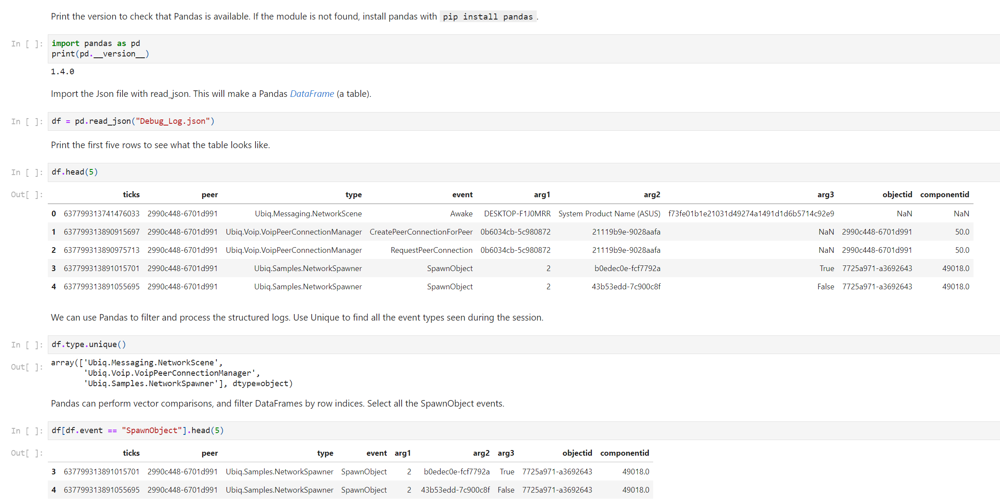
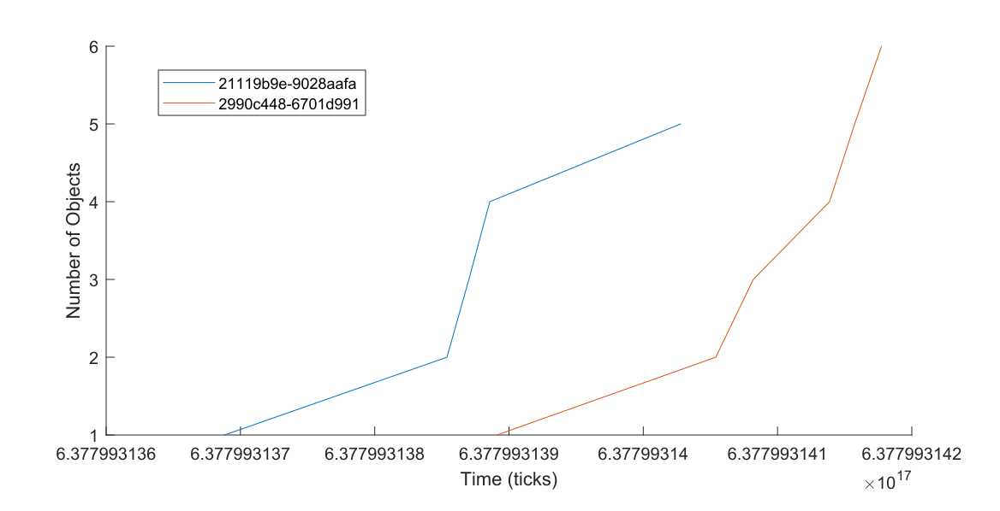

Analysis
The Event Logger outputs structured logs, as Json objects. These can be processed on any platform that can read Json files.
A sample log file is shown below.
[
{"ticks":637799309335620180,"peer":"088edbc1-1d1f09b5","type":"Ubiq.Messaging.NetworkScene","event":"Awake","arg1":"DESKTOP-F1J0MRR","arg2":"System Product Name (ASUS)","arg3":"f73fe01b1e21031d49274a1491d1d6b5714c92e9"},
{"ticks":637799309384207356,"peer":"088edbc1-1d1f09b5","type":"Ubiq.Voip.VoipPeerConnectionManager","objectid":"088edbc1-1d1f09b5","componentid":50,"event":"CreatePeerConnectionForPeer","arg1":"6c494697-2e79f5e3","arg2":"26a6ee77-3cec71fe"},
{"ticks":637799309384277353,"peer":"088edbc1-1d1f09b5","type":"Ubiq.Voip.VoipPeerConnectionManager","objectid":"088edbc1-1d1f09b5","componentid":50,"event":"RequestPeerConnection","arg1":"6c494697-2e79f5e3","arg2":"26a6ee77-3cec71fe"},
{"ticks":637799309087959820,"peer":"26a6ee77-3cec71fe","type":"Ubiq.Messaging.NetworkScene","event":"Awake","arg1":"Oculus Quest","arg2":"Oculus Quest","arg3":"b8db4746286db62ecad4c6fa13f17ab6"},
{"ticks":637799309303272560,"peer":"26a6ee77-3cec71fe","type":"Ubiq.Voip.VoipPeerConnectionManager","objectid":"26a6ee77-3cec71fe","componentid":50,"event":"CreatePeerConnectionForRequest","arg1":"6c494697-2e79f5e3"}
]
In this example, two peers - a desktop PC (Unity Editor) and an Oculus Quest - join a room. The NetworkScene and VoipPeerConnectionManager both log events.
Some Json members are defined by the Emitter type. For example, the ContextLogger writes the objectid of the context passed to it on creation. The arg members correspond to those passed to the Log() method. All entries include a timestamp and the Id of the Peer that generated the log. Timestamps are given in .Net Ticks.
Python
Python can be used to analys logs programmatically. The Jupyter notebook below shows how to import and process logs using Pandas, a powerful data analysis library for Python.

Excel
Structured event logs are amenable to being viewed in a table. Microsoft Excel PowerQuery can import Json files and load events into Excel Worksheets.
To do this:
- Open a new
Workbook - From the
Datatab, chooseGet Data->From File->From Json - Open the log file, for example
Application_log_2021-04-23-10-56-03_0.json - Select the
Listheader and clickConvert To Table. This will instruct Excel to treat each entry as a row. - Leave the Default Values in place and Click
OK. TheViewwill now appear as aColumn. - Use the button in the top right to add the
Expand Columnstep. This will split each record into a set of columns. Make sure to clickLoad More...if visible to ensure you get every possible field in the table. - Click
OK - Click
Close & Loadto build your table.
You can now order by Ticks, and filter columns such as Events.
Matlab
Like Python, Matlab can load Json using the jsondecode function.
% Read the text file and use jsondecode to produce a cell array of
% structures.
events = jsondecode(fileread("Debug_Log.json"));
% The structures will have different fields, so we must use loops to filter
% them before they can be combined into a single struct array or table.
% Below, find all the events of type SpawnObject, and combine them into a
% new array.
spawn = [];
for i = 1:numel(events)
% The curly braces access the contents of the cell i, which is the
% struct itself.
s = events{i};
if categorical(cellstr(s.event)) == categorical("SpawnObject")
spawn = [spawn; s];
end
end
% Convert the new array into a table
T = struct2table(spawn);
% Use the table to change the type of the sceneid column so we can easily
% split the events by which peer they are from.
T.peer = categorical(T.peer);
% Filter the events to keep only those emitted by the Peer that initiated
% the spawn
T = T(T.arg3,:);
% Plot the number of objects spawned over time, by each Peer
figure;
hold all;
peers = unique(T.peer);
for p = peers'
spawned = T(T.peer == p,:);
plot(spawned.ticks,1:size(spawned,1));
end
xlabel("Time (ticks)");
ylabel("Number of Objects");
legend(peers);
